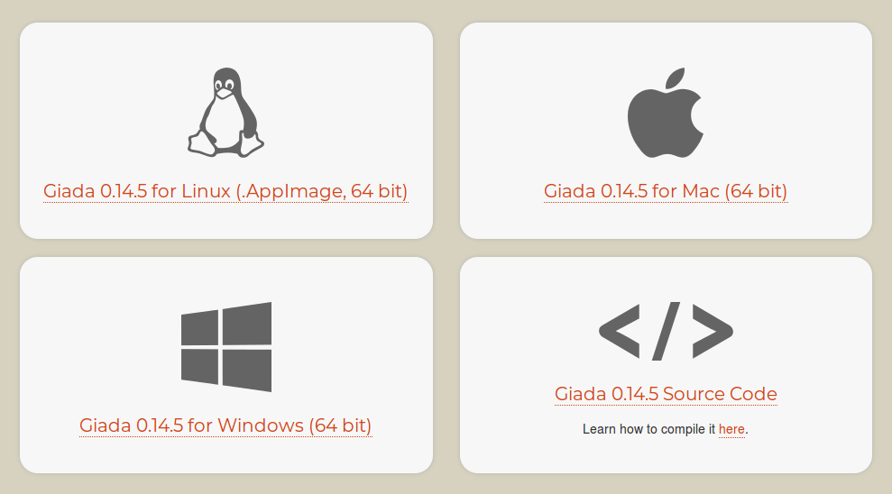

散布 AppImage
有多種方式可將 AppImage 散布給使用者。最常見的是由製作者直接散布給使用者。
以下章節說明 AppImage 常見的散布方式。
託管 AppImage
最常見的方式是將檔案放在一般的網頁伺服器上。這是最簡單且最容易存取的方法。
我們建議您在專案下載頁面上，將 Linux 的 AppImage 與 macOS 的 dmg、Windows 的 exe 並列，例如：
{kind=link}
若是開源專案且位於 GitHub，我們建議您也在 GitHub Releases 發佈 AppImage。
備註
為了讓 AppImageUpdate 正常運作，網頁伺服器必須支援 HTTP range requests。多數主機都有支援，例如瀏覽 MP3 檔也會用到相同技術。
目前已知有些託管服務不支援 range requests，包括：
若您使用此類服務且想搭配 AppImageUpdate，請要求服務提供者啟用 range requests。
遵循授權條款
即使在開源授權下，以原始碼或二進位形式散布或使用程式碼也可能產生法律義務，例如為 GPL 授權的二進位檔散布對應原始碼與建置指引、顯示著作權聲明與免責聲明等。若您以 AppImage 形式散布應用程式，必須遵守所包含第三方相依項目的所有授權條款，並在需要時與發佈的二進位檔一併提供其授權與原始碼。AppImageKit 本身採用寬鬆的 MIT 授權。
不要在 AppImage 檔名中加入「Linux」
請 不要 在 AppImage 的檔名中加入「linux」。.exe 是 Windows、.dmg 是 Mac、.AppImage 是 Linux（以及相容系統，如 WSL2 的 Windows 或具 Linuxulator 的 FreeBSD），這些已非常清楚，無需重複標示。
不要把 AppImage 放進其他封存檔
請 不要 將 AppImage 放入 .zip 或 .tar.gz 等其他封存檔。
雖然這麼做可能是為了避免使用者自行設定權限，但會破壞與可選的 appimaged 常駐服務的桌面整合等功能。此外，AppImage 格式的優點就是不需要解壓任何東西。再者，把 AppImage 放進封存檔會讓它無法被加入 https://github.com/AppImage/appimage.github.io 的中央目錄。
讓 AppImage 更容易被發現
現在您已產生 AppImage，接著要讓使用者能輕鬆找到它。要獲得使用者，就需要讓世界知道您的 AppImage。
應用程式網站
最明顯的宣傳方式是在應用程式下載頁面顯著呈現 AppImage。
「下載 AppImage」按鈕
您可以在其他下載按鈕旁放置「下載 AppImage」按鈕：

將此按鈕直接連到最新版本 AppImage，或連到包含最新 AppImage 連結的下載頁。
按鈕由 Khushraj Rathod 製作，採用 CC0 授權
AppImageHub
您可能想將 AppImage 加入 AppImageHub，這是一個由社群維護、可用且經自動測試的 AppImage 目錄，提供第三方應用商店與軟體中心可使用的資料。只要提供 AppImage 的 URL，它就會檢查並加入社群維護的目錄。
應用商店與軟體中心可使用此專案收集的中繼資料。請參閱 AppImage ecosystem。
已使用這些資料的專案包括：
Nitrux、NX Software Center：https://github.com/Nitrux/nx-software-center
如果您正在使用這些資料，請與我們聯絡，以便將您的專案列在此處
要讓您的 AppImage 被收錄，請在 https://github.com/AppImage/AppImageHub/new/master/data 新建檔案並送出 pull request。
檔案內容應為一行，放置托管 AppImage 的 GitHub 儲存庫連結（在 Releases 頁）。
或者直接放 AppImage 的連結即可，不要加其他內容。
接著送出 pull request。Travis CI 會立即自動檢查 AppImage，若成功，您的 pull request 會顯示綠色結果；若是紅色，請查看 Travis CI 的建置紀錄並修正問題。
一旦應用程式加入 AppImageHub，除非輸入檔改變，否則不會自動更新。若您需要更新 AppImageHub 上的項目（例如最新 AppImage 釋出包含新的中繼資料），請提交新的 pull request。在您的 AppImageHub 頁面底部有「Edit the input for this page」連結可用。若 URL 不變，只要在新的一行新增或移除一個「#」字元即可觸發更新。請記得 AppImageHub 不會追蹤版本，因此僅因為發布新版本並不一定需要這樣做。
作為格式，AppImage 的設計不會對製作 AppImage 的人施加限制，基本上您可以放入任何內容。但對 AppImageHub 而言，會有額外規則。送交 AppImageHub 的 AppImage 會經過自動檢查，必要時還可能人工審查。
必須可透過 URL 下載。我們的測試系統使用
wget取得 AppImage。目前無法從需要驗證或受 cookie 保護的位置取得 AppImage。商業應用程式建議提供一般可下載的試用/示範版本。若您希望將商業 AppImage 加入目錄但無法提供一般下載，請與我們聯絡。必須能在 最舊仍受支援的 Ubuntu LTS 版本 上執行（2019 年為 16.04；最新資訊請見 https://en.wikipedia.org/wiki/Ubuntu#Releases），且不需安裝額外套件。鎖定最舊仍受支援的 LTS，可確保 AppImage 不僅能在最新系統上執行，也能在較舊的目標系統（如企業散布版，不限 Ubuntu）上執行。
必須能在我們以 Travis CI 為基礎的測試環境中執行
必須通過 appdir-lint.sh
必須包含可通過
desktop-file-validate的桌面檔必須能在無網路連線的情況下執行（至少要顯示一些資訊）
建議在
usr/share/metainfo中提供 AppStream metainfo 檔；若提供，必須通過appstreamcli驗證應顯示有意義的畫面而非粗糙的對話框，因為主視窗會用作主要螢幕截圖。請注意，您可透過 AppStream metainfo 檔 提供自訂截圖。
應提供不含版本號的固定 URL。或者，應提供於 GitHub Releases 或 openSUSE Build Service（也可建議其他類似服務）。
未來的目錄
未來我們可能會使用去中心化的點對點資料庫作為 AppImage 目錄。
我們正在研究 IPFS 等技術，也很歡迎這方面的貢獻者加入。
社群媒體
也務必在社群媒體（如 Twitter、部落格等）宣傳您的新 AppImage。請使用
#AppImage標籤以提升可發現性。